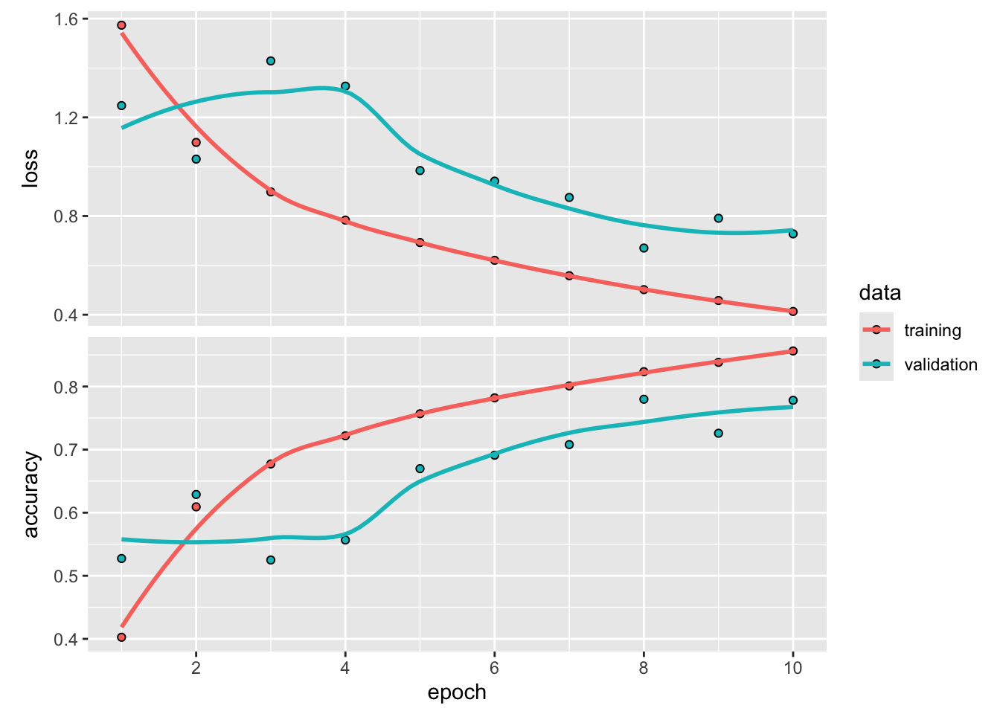
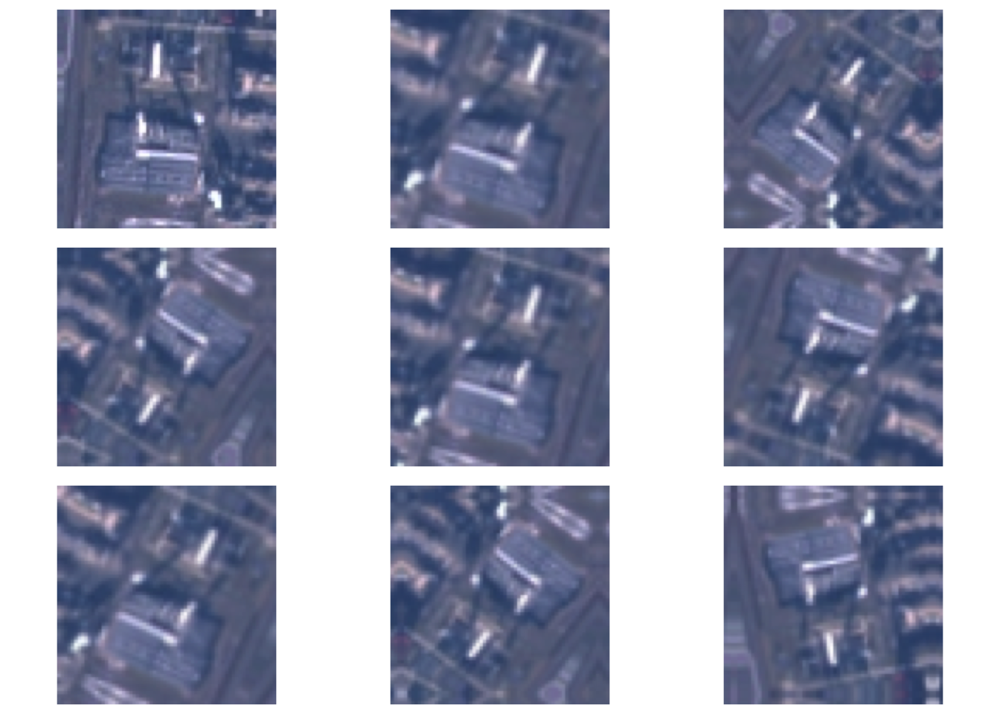
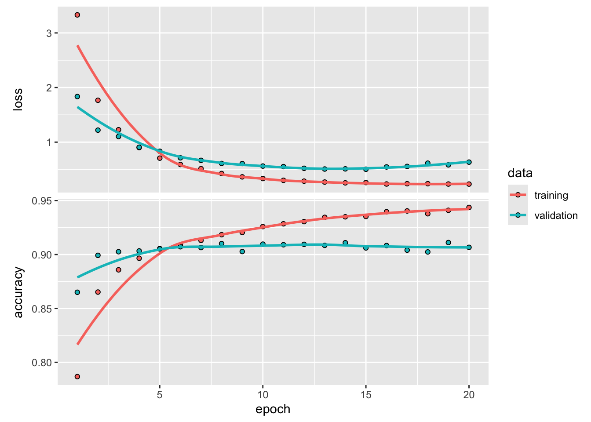

library(listarrays)
library(keras)
library(tfdatasets)GEOG 5160 6160 Lab 09
Introduction
In the last lab, we looked at how to build and train convolutional neural networks for image classification. This lab will build from that by introducing a set of extensions from that basic model. These are:
- Using data generators to process and input image files
- Using data augmentation
- Using pretrained models
Data
For this exercise, we’ll again use the EuroSat benchmarking dataset from: https://zenodo.org/records/7711810:
EuroSAT is a land use and land cover classification dataset. The dataset is based on Sentinel-2 satellite imagery covering 13 spectral bands and consists of 10 LULC classes with a total of 27,000 labeled and geo-referenced images.
You should have a copy of these files from the previous lab, but if not, download the zip file EuroSat_RGB.zip from the class webpage, move it to a folder that is easy to find on your computer, and unzip it.
Once you have unzipped the data, take a look in the EuroSat_RGB folder. This is already set up in the standard way for image classification, where all images for a given class are kept in a single folder for that class.
- EuroSat_RGB
- AnnualCrop
- Forest
- HerbaceousVegetation
- ...Data generators
In the previous exercise, we simply loaded all the image files into memory and converted them to numpy arrays for training and testing. This is fine for small sets of images, but can quickly become impractical with larger sets or when the images are larger. To help with this, keras has a set of helper functions. these can be set to only load a small number of images at a time (a batch of images). During each training epoch the function loads batch_size images in a batch, updates the model weights, then loads the next batch. In general, once each batch of images has been used, the set of validation images are then processed to get the validation metrics.
keras has a set of these functions for different types of data (text, time series, images). Here, we’ll use image_dataset_from_directory, which processes images from a named directory. This assumes that this directory contains a set of subdirectories (one per class of image). So the train directory will contain one directory called AnnualCrop with all the annual crop images, etc. What makes this a little more complex, is that the function is designed to work on separate folders of training, validation and testing images. So the actual folder format will look something like this:
- base_dir
- train
- AnnualCrop
- Forest
- HerbaceousVegetation
- ...
- valid
- AnnualCrop
- Forest
- HerbaceousVegetation
- ...
- test
- AnnualCrop
- Forest
- HerbaceousVegetation
- ...Before doing anything else, let’s load the keras library. You’ll also need the tfdatasets and listarrays libraries.
We’ll now create this folder structure, shuffle the original image sets and copy them into this. Note that the code below is not the most efficient, but should hopefully be fairly transparent as to what is going on. First we set names for the old and new directories (as well as creating the new directory)
set.seed(42)
old_dir = "./datafiles/EuroSAT_RGB/EuroSAT_RGB/"
new_dir = "./datafiles/EuroSAT_RGB_class/"
if(!dir.exists(new_dir)) {dir.create(new_dir)}Following this, we create training, validation and testing subdirectories
train_dir = paste0(new_dir, "/train/")
if(!dir.exists(train_dir)) {dir.create(train_dir)}
valid_dir = paste0(new_dir, "/valid/")
if(!dir.exists(valid_dir)) {dir.create(valid_dir)}
test_dir = paste0(new_dir, "/test/")
if(!dir.exists(test_dir)) {dir.create(test_dir)}And now we loop by class, find the list of files, randomly split this into different subsets and copy to the appropriate directory. Note that this might take a couple of minutes to run (it is trying to process about 25000 images).
classes = c("AnnualCrop", "Forest", "HerbaceousVegetation", "Highway",
"Industrial", "Pasture", "PermanentCrop", "Residential",
"River", "SeaLake")
for (class in classes) {
print(class)
in_dir = paste0(old_dir, class, "/")
train_dir = paste0(new_dir, "/train/", class, "/")
if(dir.exists(train_dir)) { unlink(train_dir, recursive = TRUE) }
dir.create(train_dir)
valid_dir = paste0(new_dir, "/valid/", class, "/")
if(dir.exists(valid_dir)) { unlink(valid_dir, recursive = TRUE) }
dir.create(valid_dir)
test_dir = paste0(new_dir, "/test/", class, "/")
if(dir.exists(test_dir)) { unlink(test_dir, recursive = TRUE) }
dir.create(test_dir)
file_list = list.files(in_dir)
file_id = 1:length(file_list)
ssize = round(length(file_id) / 5)
test_id = sample(file_id, ssize)
file_id = setdiff(file_id, test_id)
valid_id = sample(file_id, ssize)
train_id = setdiff(file_id, valid_id)
train_files = file_list[train_id]
valid_files = file_list[valid_id]
test_files = file_list[test_id]
file.copy(paste0(in_dir, train_files), paste0(train_dir))
file.copy(paste0(in_dir, valid_files), paste0(valid_dir))
file.copy(paste0(in_dir, test_files), paste0(test_dir))
}We can now set up the data generator using image_dataset_from_directory. First, let’s fix the base directory, plus image size and number of channels, and the batch size (the number of images to be loaded at any one time)
base_dir = new_dir
image_width = 64
image_height = 64
num_channels = 3
batch_size = 32Now, we’ll set up an generator for the training images. This takes as arguments
- The top level folder storing the class folders
- The image size
- The batch size
There are a number of other arguments to this function, including whether to shuffle the images between epochs (default True), and whether to infer the class names from the subfolder names or from a list (default inferred). When you run this, it should print both the number of images and classes it found in that directory. If either of these numbers is 0, please check your file path
train_dataset <-
image_dataset_from_directory(paste0(base_dir, "/", "train"),
image_size = c(image_width, image_height),
batch_size = batch_size)Found 16200 files belonging to 10 classes.Now, we can set up separate generators for the validation and training sets:
valid_dataset <-
image_dataset_from_directory(paste0(base_dir, "/", "valid"),
image_size = c(image_width, image_height),
batch_size = batch_size)Found 5400 files belonging to 10 classes.test_dataset <-
image_dataset_from_directory(paste0(base_dir, "/", "test"),
image_size = c(image_width, image_height),
batch_size = batch_size)Found 5400 files belonging to 10 classes.The dataset objects made can now be used to generate sets of data. Just as an example, the following code pulls the next iteration of a batch of training data and print the resulting shapes. Note that each batch of features is (batch_size, image_width, image_height, num_channels) and each batch of labels is batch_size.
iter_out = iter_next(as_iterator(train_dataset))
iter_out[[1]]$shapeTensorShape([32, 64, 64, 3])iter_out[[2]]$shapeTensorShape([32])CNN with data generator
We’ll now go ahead and build a model that can be trained using the data generator. In the interest of time in this class, we’ll keep this model simple, with only two convolutional layers, and two max-pooling steps. (Feel free to experiment with this by adding more convolutions or dense layers after the Flatten layer).
We’ll also use a different syntax to build the model. This is keras functional API, which allows for more flexible model building. If you look at the code below, you should see that each layer is added as a single function call, rather than putting everything within a Sequential model as we did previously. This can help in diagnosing problems (when a single layer causes a error), as well as allowing different model architechtures. A couple of other things to note:
- We start with an
Inputlayer which defines dimensions of the input data tensors (the images) - We then use R’s pipe operator to add successive layers, including a
rescalinglayer to convert between the original pixel values ([0-255]) and a standardized range of [0-1] - The flattened output is passed through a single densely connected layer before the output
- We again use ReLU activation for all intermediate layers, and a softmax for the output
inputs <- layer_input(shape = c(image_width, image_height, num_channels))
outputs <- inputs |>
layer_rescaling(1 / 255) |>
layer_conv_2d(filters = 32, kernel_size = 3, activation = "relu") |>
layer_max_pooling_2d(pool_size = 2) |>
layer_conv_2d(filters = 64, kernel_size = 3, activation = "relu") |>
layer_max_pooling_2d(pool_size = 2) |>
layer_flatten() |>
layer_dense(32, activation = "relu") |>
layer_dense(10, activation = "softmax")
model <- keras_model(inputs, outputs)This gives us a total of around 420 thousand weights:
summary(model)Model: "model"
________________________________________________________________________________
Layer (type) Output Shape Param #
================================================================================
input_1 (InputLayer) [(None, 64, 64, 3)] 0
rescaling (Rescaling) (None, 64, 64, 3) 0
conv2d_1 (Conv2D) (None, 62, 62, 32) 896
max_pooling2d_1 (MaxPooling2D) (None, 31, 31, 32) 0
conv2d (Conv2D) (None, 29, 29, 64) 18496
max_pooling2d (MaxPooling2D) (None, 14, 14, 64) 0
flatten (Flatten) (None, 12544) 0
dense_1 (Dense) (None, 32) 401440
dense (Dense) (None, 10) 330
================================================================================
Total params: 421162 (1.61 MB)
Trainable params: 421162 (1.61 MB)
Non-trainable params: 0 (0.00 Byte)
________________________________________________________________________________Now we’ll define the loss, optimizer and performance metric. The only change here is that we will use the slightly simpler RMSprop as the optimizer
model |>
compile(loss = "sparse_categorical_crossentropy",
optimizer = optimizer_rmsprop(learning_rate = 1e-3),
metrics = "accuracy")Before training, we’ll define a callback. This is one of a set of functions that are run at specific times during the training. There are a number of these that can carry out different operations (and you can write your own). Here, we’ll use ModelCheckpoint. This will save the state of the model (i.e. the weights) at each step. To avoid overwriting the file if the model starts to overfit, we specify that the update should only be made if the current validation accuracy is better than the previously saved one.
As deep learning models can take quite a long time to train, it’s worth getting used to saving them to file so that you can reuse them at a later point without costly retraining.
callbacks <- list(
callback_model_checkpoint(
filepath = "model1.keras",
save_best_only = TRUE,
monitor = "val_loss"
)
)And finally, we train the model. We’ll only train it for 10 epochs here to keep the computation time down, but in practice, this would likely need several more.
history <- model |>
fit(
train_dataset,
epochs = 10,
validation_data = valid_dataset,
callbacks = callbacks
)Epoch 1/10
507/507 - 11s - loss: 1.5736 - accuracy: 0.4026 - val_loss: 1.2477 - val_accuracy: 0.5274 - 11s/epoch - 23ms/step
Epoch 2/10
507/507 - 11s - loss: 1.0984 - accuracy: 0.6093 - val_loss: 1.0308 - val_accuracy: 0.6289 - 11s/epoch - 22ms/step
Epoch 3/10
507/507 - 11s - loss: 0.8979 - accuracy: 0.6772 - val_loss: 1.4288 - val_accuracy: 0.5250 - 11s/epoch - 22ms/step
Epoch 4/10
507/507 - 10s - loss: 0.7835 - accuracy: 0.7219 - val_loss: 1.3267 - val_accuracy: 0.5567 - 10s/epoch - 20ms/step
Epoch 5/10
507/507 - 11s - loss: 0.6925 - accuracy: 0.7568 - val_loss: 0.9844 - val_accuracy: 0.6698 - 11s/epoch - 21ms/step
Epoch 6/10
507/507 - 11s - loss: 0.6206 - accuracy: 0.7820 - val_loss: 0.9416 - val_accuracy: 0.6911 - 11s/epoch - 21ms/step
Epoch 7/10
507/507 - 11s - loss: 0.5581 - accuracy: 0.8009 - val_loss: 0.8753 - val_accuracy: 0.7080 - 11s/epoch - 21ms/step
Epoch 8/10
507/507 - 11s - loss: 0.5017 - accuracy: 0.8235 - val_loss: 0.6704 - val_accuracy: 0.7798 - 11s/epoch - 21ms/step
Epoch 9/10
507/507 - 11s - loss: 0.4577 - accuracy: 0.8383 - val_loss: 0.7910 - val_accuracy: 0.7259 - 11s/epoch - 21ms/step
Epoch 10/10
507/507 - 11s - loss: 0.4132 - accuracy: 0.8564 - val_loss: 0.7277 - val_accuracy: 0.7781 - 11s/epoch - 21ms/stepLet’s plot the accuracy and loss curves
plot(history)
Next, we’ll evaluate the model using the test images. To demonstrate the use of the save model file, we’ll load that and use the resulting object to evaluate. You should get an accuracy of between 0.7 and 0.8. This is lower than the previous model we built, as the current one is both simpler and has only been trained for a short period.
test_model <- load_model_tf("model1.keras")
result <- evaluate(test_model, test_dataset)169/169 - 1s - loss: 0.6634 - accuracy: 0.7819 - 1s/epoch - 6ms/stepcat(sprintf("Test accuracy: %.3f\n", result["accuracy"]))Test accuracy: 0.782Using data augmentation
The most successful CNNs are generally trained on hundreds of thousands or millions of images. So while we have around 19000 images to train from, this remains a fairly small dataset. One approach to improve the predictive skill of models trained ‘from scratch’ with smaller data is to use data augmentation. In this approach, we randomly manipulate each training image at each epoch through rotations, zooming, translation, flipping, etc. This is trying to represent the concept that if a set of people all took an image of the same object, each image would be slightly different as some people would be closer/further away, shorter or taller etc.
Rather than trying to do this by hand, keras has a set of layers that will peform random augmentation (defining these as layers makes it easy to incorporate them in a CNN as we will see). To illustrate this, we’ll create a new model that represents the data augmentation step. This will have a random flip (both horizontal and vertical), a random rotation by about 10% (left and right) and a random zoom of up to 20%
data_augmentation <- keras_model_sequential() |>
layer_random_flip() |>
layer_random_rotation(0.1) |>
layer_random_zoom(0.2)We can now extract a random training image and pass it through the augmentation model to show the results. Note that your image and changes will be different. You can also re-run this multiple times to see different images
batch <- train_dataset |>
as_iterator() |>
iter_next()
c(images, labels) %<-% batch
par(mfrow = c(3, 3), mar = rep(.5, 4))
image <- images[1, , , ]
plot(as.raster(as.array(image), max = 255))
for (i in 2:9) {
augmented_images <- data_augmentation(images)
augmented_image <- augmented_images[1, , , ]
plot(as.raster(as.array(augmented_image), max = 255))
}
To incorporate that into a CNN model, all we have to do is include this set of layers in the model we build, between the input and first convolution layer. As augmentation effectively increases the correlation between images, we’ll also add a drop out later after flattening to limit the effect of this
inputs <- layer_input(shape = c(image_width, image_height, num_channels))
outputs <- inputs |>
data_augmentation() |>
layer_rescaling(1 / 255) |>
layer_conv_2d(filters = 32, kernel_size = 3, activation = "relu") |>
layer_max_pooling_2d(pool_size = 2) |>
layer_conv_2d(filters = 64, kernel_size = 3, activation = "relu") |>
layer_max_pooling_2d(pool_size = 2) |>
layer_flatten() |>
layer_dense(32, activation = "relu") |>
layer_dropout(0.5) |>
layer_dense(10, activation = "softmax")
model <- keras_model(inputs, outputs)
model |>
compile(loss = "sparse_categorical_crossentropy",
optimizer = optimizer_rmsprop(learning_rate = 1e-3),
metrics = "accuracy")We’ll train with a checkpoint to save the best model. Augmentation usually requires a longer period of training (we’ll run for 10 epochs again here)
callbacks <- list(
callback_model_checkpoint(
filepath = "model2.keras",
save_best_only = TRUE,
monitor = "val_loss"
)
)
history <- model |> fit(
train_dataset,
epochs = 10,
validation_data = valid_dataset,
callbacks = callbacks
)Epoch 1/10
507/507 - 12s - loss: 2.0313 - accuracy: 0.2274 - val_loss: 1.7680 - val_accuracy: 0.3974 - 12s/epoch - 24ms/step
Epoch 2/10
507/507 - 12s - loss: 1.8034 - accuracy: 0.3052 - val_loss: 1.5185 - val_accuracy: 0.4557 - 12s/epoch - 24ms/step
Epoch 3/10
507/507 - 12s - loss: 1.6751 - accuracy: 0.3769 - val_loss: 1.2824 - val_accuracy: 0.5441 - 12s/epoch - 23ms/step
Epoch 4/10
507/507 - 12s - loss: 1.4892 - accuracy: 0.4427 - val_loss: 1.1379 - val_accuracy: 0.6217 - 12s/epoch - 23ms/step
Epoch 5/10
507/507 - 12s - loss: 1.3560 - accuracy: 0.5072 - val_loss: 1.0978 - val_accuracy: 0.5841 - 12s/epoch - 23ms/step
Epoch 6/10
507/507 - 12s - loss: 1.2637 - accuracy: 0.5459 - val_loss: 1.5270 - val_accuracy: 0.4283 - 12s/epoch - 23ms/step
Epoch 7/10
507/507 - 12s - loss: 1.2037 - accuracy: 0.5699 - val_loss: 1.6309 - val_accuracy: 0.5494 - 12s/epoch - 23ms/step
Epoch 8/10
507/507 - 12s - loss: 1.1486 - accuracy: 0.5875 - val_loss: 1.0459 - val_accuracy: 0.6019 - 12s/epoch - 23ms/step
Epoch 9/10
507/507 - 12s - loss: 1.1114 - accuracy: 0.6051 - val_loss: 0.8836 - val_accuracy: 0.6957 - 12s/epoch - 24ms/step
Epoch 10/10
507/507 - 12s - loss: 1.1063 - accuracy: 0.6081 - val_loss: 1.1063 - val_accuracy: 0.6065 - 12s/epoch - 23ms/stepAnd as before, we’ll load the model and evaluate using the test set. You should see a small improvement in the accuracy (and running this for a longer set of iterations would improve this further).
test_model <- load_model_tf("model2.keras")
result <- evaluate(test_model, test_dataset)169/169 - 1s - loss: 0.8592 - accuracy: 0.7007 - 1s/epoch - 7ms/stepcat(sprintf("Test accuracy: %.3f\n", result["accuracy"]))Test accuracy: 0.701Using a pretrained model
An alternative approach for working with small image datasets is to use pretrained CNNs. These are generally CNNs that have been trained on a much larger and more varied set of images. To understand how (and why) this might work, it helps to remember that CNNs are considered to have two sections:
- A feature extractor (the convolution and pooling layers) - also known as the ‘convolutional base’
- A classifier (the set of densely connected layers and the output)
When we use pretrained models, we try to leverage information contained in the convolutional base. For large models, trained on large data, the idea is that some of the image features that were learned are generic - i.e. they can occur in some way in multiple classes of images.
If this original data-set is large enough and general enough, the spatial hierarchy of features learned by the pretrained model can effectively act as a generic model of the visual world, and hence, its features can prove useful for many different computer vision problems, even though these new problems may involve completely different classes than those of the original task (Chollet)
Or to put it another way, if the model has learned how to look at the world and recognize general features in images, we should be able to recombine these to learn new types or classes of image.
Feature extraction
As a first attempt at this, we’ll use a pretrained model simply as a feature extractor. In practice, this means pushing our EuroSAT images through the pretrained convolutional base and saving the outputs. We’ll then use these as inputs to train a new classifier model
Why reuse only the convolutional base? Could we reuse the densely connected classifier as well? In general, doing so should be avoided. The reason is that the representations learned by the convolutional base are likely to be more generic and, therefore, more reusable: the feature maps of a convnet are presence maps of generic concepts over a picture, which are likely to be useful regardless of the computer vision problem at hand. But the representations learned by the classifier will necessarily be specific to the set of classes on which the model was trained (Chollet)
Here, we’ll use the VGG16 model. This is a model developed by the University of Oxford. It has 16 layers, and was trained on the ImageNet dataset which comprises around 14 million images from 1000 different classes. keras has a useful helper function to acquire this model (and a few others as well). A much broader range of pretrained models can be found on the Hugging Face website (https://huggingface.co/).
Let’s download this and set it up. Note that we specify the weights (based on the dataset used to train it originally), whether or not to include the classifier (include_top=False) and the expected input shape of the images we will be using this with
conv_base <- application_vgg16(
weights = "imagenet",
include_top = FALSE,
input_shape = c(image_width, image_height, num_channels)
)Let’s take a look at the model. Note this is a much higher number of weights than anything we’ve looked at so fat (~14 million). Note also that there are no dense or output layers
summary(conv_base)Model: "vgg16"
________________________________________________________________________________
Layer (type) Output Shape Param #
================================================================================
input_3 (InputLayer) [(None, 64, 64, 3)] 0
block1_conv1 (Conv2D) (None, 64, 64, 64) 1792
block1_conv2 (Conv2D) (None, 64, 64, 64) 36928
block1_pool (MaxPooling2D) (None, 32, 32, 64) 0
block2_conv1 (Conv2D) (None, 32, 32, 128) 73856
block2_conv2 (Conv2D) (None, 32, 32, 128) 147584
block2_pool (MaxPooling2D) (None, 16, 16, 128) 0
block3_conv1 (Conv2D) (None, 16, 16, 256) 295168
block3_conv2 (Conv2D) (None, 16, 16, 256) 590080
block3_conv3 (Conv2D) (None, 16, 16, 256) 590080
block3_pool (MaxPooling2D) (None, 8, 8, 256) 0
block4_conv1 (Conv2D) (None, 8, 8, 512) 1180160
block4_conv2 (Conv2D) (None, 8, 8, 512) 2359808
block4_conv3 (Conv2D) (None, 8, 8, 512) 2359808
block4_pool (MaxPooling2D) (None, 4, 4, 512) 0
block5_conv1 (Conv2D) (None, 4, 4, 512) 2359808
block5_conv2 (Conv2D) (None, 4, 4, 512) 2359808
block5_conv3 (Conv2D) (None, 4, 4, 512) 2359808
block5_pool (MaxPooling2D) (None, 2, 2, 512) 0
================================================================================
Total params: 14714688 (56.13 MB)
Trainable params: 14714688 (56.13 MB)
Non-trainable params: 0 (0.00 Byte)
________________________________________________________________________________So how do we use this? We’ll create a function that iterates across every image we have in training, validation and testing. This will take the image and run it through the VGGNet convolutional base, where each image will be transformed using the learned set of convolutions (and pooling). The transformed images are save as all_features and the corresponding labels are also saved.
get_features_and_labels <- function(dataset) {
n_batches <- length(dataset)
all_features <- vector("list", n_batches)
all_labels <- vector("list", n_batches)
iterator <- as_array_iterator(dataset)
for (i in 1:n_batches) {
c(images, labels) %<-% iter_next(iterator)
preprocessed_images <- imagenet_preprocess_input(images)
features <- conv_base |> predict(preprocessed_images, verbose = 0)
all_labels[[i]] <- labels
all_features[[i]] <- features
}
all_features <- listarrays::bind_on_rows(all_features)
all_labels <- listarrays::bind_on_rows(all_labels)
list(all_features, all_labels)
}Now let’s run this to convert all images. Note that this will take a few minutes to run.
c(train_features, train_labels) %<-% get_features_and_labels(train_dataset)
c(val_features, val_labels) %<-% get_features_and_labels(valid_dataset)
c(test_features, test_labels) %<-% get_features_and_labels(test_dataset)Once we have the set of transformed images, we can create a new classifier. We’ll just reuse the same set of layers as in the previous model (Flatten -> Dense -> Dropout -> Output). Note that the input shape has changed - this is now equivalent to the output of the convolutional base (2x2x512)
inputs <- layer_input(shape = c(2, 2, 512))
outputs <- inputs |>
layer_flatten() |>
layer_dense(64) |>
layer_dropout(.5) |>
layer_dense(10, activation = "softmax")
model <- keras_model(inputs, outputs)
model |>
compile(loss = "sparse_categorical_crossentropy",
optimizer = optimizer_rmsprop(learning_rate = 1e-3),
metrics = "accuracy")And train it! One of the big advantages of this approach is that the model is substantially smaller (no convolutions) and so quicker to train
callbacks <- list(
callback_model_checkpoint(
filepath = "model3.keras",
save_best_only = TRUE,
monitor = "val_loss"
)
)
history <- model |> fit(
train_features, train_labels,
epochs = 20,
validation_data = list(val_features, val_labels),
callbacks = callbacks
)Epoch 1/20
507/507 - 1s - loss: 3.3307 - accuracy: 0.7867 - val_loss: 1.8348 - val_accuracy: 0.8650 - 711ms/epoch - 1ms/step
Epoch 2/20
507/507 - 0s - loss: 1.7665 - accuracy: 0.8652 - val_loss: 1.2196 - val_accuracy: 0.8993 - 407ms/epoch - 803us/step
Epoch 3/20
507/507 - 0s - loss: 1.2271 - accuracy: 0.8858 - val_loss: 1.1029 - val_accuracy: 0.9026 - 410ms/epoch - 809us/step
Epoch 4/20
507/507 - 0s - loss: 0.8998 - accuracy: 0.8965 - val_loss: 0.9058 - val_accuracy: 0.9033 - 412ms/epoch - 813us/step
Epoch 5/20
507/507 - 0s - loss: 0.7068 - accuracy: 0.9056 - val_loss: 0.8328 - val_accuracy: 0.9052 - 436ms/epoch - 860us/step
Epoch 6/20
507/507 - 0s - loss: 0.5904 - accuracy: 0.9087 - val_loss: 0.7129 - val_accuracy: 0.9072 - 393ms/epoch - 775us/step
Epoch 7/20
507/507 - 0s - loss: 0.5146 - accuracy: 0.9131 - val_loss: 0.6664 - val_accuracy: 0.9065 - 408ms/epoch - 805us/step
Epoch 8/20
507/507 - 0s - loss: 0.4249 - accuracy: 0.9184 - val_loss: 0.6094 - val_accuracy: 0.9102 - 406ms/epoch - 801us/step
Epoch 9/20
507/507 - 0s - loss: 0.3640 - accuracy: 0.9204 - val_loss: 0.6078 - val_accuracy: 0.9028 - 396ms/epoch - 782us/step
Epoch 10/20
507/507 - 0s - loss: 0.3332 - accuracy: 0.9259 - val_loss: 0.5617 - val_accuracy: 0.9096 - 428ms/epoch - 845us/step
Epoch 11/20
507/507 - 0s - loss: 0.3006 - accuracy: 0.9285 - val_loss: 0.5519 - val_accuracy: 0.9091 - 397ms/epoch - 782us/step
Epoch 12/20
507/507 - 0s - loss: 0.2853 - accuracy: 0.9306 - val_loss: 0.5208 - val_accuracy: 0.9094 - 412ms/epoch - 813us/step
Epoch 13/20
507/507 - 0s - loss: 0.2687 - accuracy: 0.9345 - val_loss: 0.5074 - val_accuracy: 0.9085 - 392ms/epoch - 773us/step
Epoch 14/20
507/507 - 0s - loss: 0.2540 - accuracy: 0.9350 - val_loss: 0.5103 - val_accuracy: 0.9109 - 388ms/epoch - 765us/step
Epoch 15/20
507/507 - 0s - loss: 0.2591 - accuracy: 0.9353 - val_loss: 0.5030 - val_accuracy: 0.9061 - 404ms/epoch - 798us/step
Epoch 16/20
507/507 - 0s - loss: 0.2330 - accuracy: 0.9397 - val_loss: 0.5453 - val_accuracy: 0.9083 - 385ms/epoch - 759us/step
Epoch 17/20
507/507 - 0s - loss: 0.2383 - accuracy: 0.9404 - val_loss: 0.5552 - val_accuracy: 0.9041 - 387ms/epoch - 763us/step
Epoch 18/20
507/507 - 0s - loss: 0.2385 - accuracy: 0.9378 - val_loss: 0.6149 - val_accuracy: 0.9024 - 390ms/epoch - 770us/step
Epoch 19/20
507/507 - 0s - loss: 0.2324 - accuracy: 0.9410 - val_loss: 0.5836 - val_accuracy: 0.9111 - 387ms/epoch - 763us/step
Epoch 20/20
507/507 - 1s - loss: 0.2317 - accuracy: 0.9437 - val_loss: 0.6337 - val_accuracy: 0.9067 - 541ms/epoch - 1ms/stepplot(history)
And we can evaluate on the training set using the extracted test dataset. This now should show a substantial improvement over the previous models, with an accuracy of over 90%.
test_model <- load_model_tf("model3.keras")
result <- evaluate(test_model, test_features, test_labels)169/169 - 0s - loss: 0.4981 - accuracy: 0.9078 - 125ms/epoch - 742us/stepcat(sprintf("Test accuracy: %.3f\n", result["accuracy"]))Test accuracy: 0.908Feature extraction with data augmentation
In the previous model, we separated the feature extraction and classifier into two separate steps. This prevents us from using data augmentation, as we only ‘extract’ each image once. If you want to combine both these approaches, it is possible to create a new model that incorporates:
- The augmentation layer(s)
- The convolutional base
- The new trainable classifier
And we’ll demonstrate this here. First, we re-instantiate the VGGNet model. We then set the argument trainable = False. This ‘freezes’ all the existing weights so that they are not updated during training.
conv_base <- application_vgg16(
weights = "imagenet",
include_top = FALSE)
freeze_weights(conv_base)If you now look at the summary of this model, you should see that the number of trainable parameters (at the bottom) is now 0; in other words, we do not update any of these while training with the new data
summary(conv_base)Model: "vgg16"
________________________________________________________________________________
Layer (type) Output Shape Param # Trainable
================================================================================
input_5 (InputLayer) [(None, None, None, 3)] 0 N
block1_conv1 (Conv2D) (None, None, None, 64) 1792 N
block1_conv2 (Conv2D) (None, None, None, 64) 36928 N
block1_pool (MaxPooling2D) (None, None, None, 64) 0 N
block2_conv1 (Conv2D) (None, None, None, 128) 73856 N
block2_conv2 (Conv2D) (None, None, None, 128) 147584 N
block2_pool (MaxPooling2D) (None, None, None, 128) 0 N
block3_conv1 (Conv2D) (None, None, None, 256) 295168 N
block3_conv2 (Conv2D) (None, None, None, 256) 590080 N
block3_conv3 (Conv2D) (None, None, None, 256) 590080 N
block3_pool (MaxPooling2D) (None, None, None, 256) 0 N
block4_conv1 (Conv2D) (None, None, None, 512) 1180160 N
block4_conv2 (Conv2D) (None, None, None, 512) 2359808 N
block4_conv3 (Conv2D) (None, None, None, 512) 2359808 N
block4_pool (MaxPooling2D) (None, None, None, 512) 0 N
block5_conv1 (Conv2D) (None, None, None, 512) 2359808 N
block5_conv2 (Conv2D) (None, None, None, 512) 2359808 N
block5_conv3 (Conv2D) (None, None, None, 512) 2359808 N
block5_pool (MaxPooling2D) (None, None, None, 512) 0 N
================================================================================
Total params: 14714688 (56.13 MB)
Trainable params: 0 (0.00 Byte)
Non-trainable params: 14714688 (56.13 MB)
________________________________________________________________________________We then make the augmentation layer (we could simply reuse the one from above, this is just here as a reminder or in case you want to change any augmentation parameters). Once this is made, we add the convolutional base, the augmentation and a new classifier together into a new CNN model
data_augmentation <- keras_model_sequential() |>
layer_random_flip() |>
layer_random_rotation(0.1) |>
layer_random_zoom(0.2)
inputs <- layer_input(shape = c(image_width, image_height, num_channels))
outputs <- inputs |>
data_augmentation() |>
imagenet_preprocess_input() |>
conv_base() |>
layer_flatten() |>
layer_dense(64) |>
layer_dropout(.5) |>
layer_dense(10, activation = "softmax")
model <- keras_model(inputs, outputs)
model |>
compile(loss = "sparse_categorical_crossentropy",
optimizer = optimizer_rmsprop(learning_rate = 1e-3),
metrics = "accuracy")The code to run this is given below. Be aware that this takes a fair amount of time to run (roughly 20 min on my laptop), even though we are only training weights in the last densely connected layers. This is because we are now obtaining batches of images, extracting the features using the previous model (vgg16.preprocess_input), passing this through a classifier and then doing all the usual updating of weights.
callbacks <- list(
callback_model_checkpoint(
filepath = "model4.h5",
save_best_only = TRUE,
monitor = "val_loss"
)
)
history <- model %>% fit(
train_dataset,
epochs = 20,
validation_data = valid_dataset,
callbacks = callbacks
)Epoch 1/20
507/507 - 104s - loss: 3.4212 - accuracy: 0.7418 - val_loss: 1.9356 - val_accuracy: 0.8611 - 104s/epoch - 205ms/step
Epoch 2/20
507/507 - 106s - loss: 2.1239 - accuracy: 0.8085 - val_loss: 1.4325 - val_accuracy: 0.8750 - 106s/epoch - 209ms/step
Epoch 3/20
507/507 - 106s - loss: 1.4983 - accuracy: 0.8246 - val_loss: 1.0311 - val_accuracy: 0.8802 - 106s/epoch - 209ms/step
Epoch 4/20
507/507 - 103s - loss: 1.0836 - accuracy: 0.8318 - val_loss: 0.7469 - val_accuracy: 0.8841 - 103s/epoch - 202ms/step
Epoch 5/20
507/507 - 103s - loss: 0.8051 - accuracy: 0.8361 - val_loss: 0.5509 - val_accuracy: 0.8850 - 103s/epoch - 203ms/step
Epoch 6/20
507/507 - 103s - loss: 0.6260 - accuracy: 0.8412 - val_loss: 0.4344 - val_accuracy: 0.8952 - 103s/epoch - 203ms/step
Epoch 7/20
507/507 - 104s - loss: 0.5167 - accuracy: 0.8527 - val_loss: 0.4029 - val_accuracy: 0.9000 - 104s/epoch - 204ms/step
Epoch 8/20
507/507 - 104s - loss: 0.5053 - accuracy: 0.8531 - val_loss: 0.4171 - val_accuracy: 0.8898 - 104s/epoch - 205ms/step
Epoch 9/20
507/507 - 101s - loss: 0.5013 - accuracy: 0.8566 - val_loss: 0.3764 - val_accuracy: 0.9007 - 101s/epoch - 200ms/step
Epoch 10/20
507/507 - 101s - loss: 0.4786 - accuracy: 0.8627 - val_loss: 0.3985 - val_accuracy: 0.8991 - 101s/epoch - 199ms/step
Epoch 11/20
507/507 - 103s - loss: 0.4849 - accuracy: 0.8611 - val_loss: 0.3693 - val_accuracy: 0.9031 - 103s/epoch - 203ms/step
Epoch 12/20
507/507 - 104s - loss: 0.4802 - accuracy: 0.8609 - val_loss: 0.4020 - val_accuracy: 0.9000 - 104s/epoch - 206ms/step
Epoch 13/20
507/507 - 103s - loss: 0.4914 - accuracy: 0.8652 - val_loss: 0.3941 - val_accuracy: 0.9076 - 103s/epoch - 203ms/step
Epoch 14/20
507/507 - 101s - loss: 0.4836 - accuracy: 0.8645 - val_loss: 0.4008 - val_accuracy: 0.9007 - 101s/epoch - 200ms/step
Epoch 15/20
507/507 - 101s - loss: 0.4819 - accuracy: 0.8615 - val_loss: 0.4338 - val_accuracy: 0.8891 - 101s/epoch - 199ms/step
Epoch 16/20
507/507 - 99s - loss: 0.4868 - accuracy: 0.8623 - val_loss: 0.3846 - val_accuracy: 0.9048 - 99s/epoch - 195ms/step
Epoch 17/20
507/507 - 100s - loss: 0.4793 - accuracy: 0.8638 - val_loss: 0.3913 - val_accuracy: 0.9050 - 100s/epoch - 197ms/step
Epoch 18/20
507/507 - 99s - loss: 0.4772 - accuracy: 0.8672 - val_loss: 0.4127 - val_accuracy: 0.8976 - 99s/epoch - 195ms/step
Epoch 19/20
507/507 - 98s - loss: 0.4754 - accuracy: 0.8688 - val_loss: 0.4477 - val_accuracy: 0.8972 - 98s/epoch - 194ms/step
Epoch 20/20
507/507 - 220s - loss: 0.4831 - accuracy: 0.8670 - val_loss: 0.4191 - val_accuracy: 0.8948 - 220s/epoch - 434ms/stepTesting this shows a similar improvement to the previous model (>0.9). The real difference here is that in the previous model we had to extract all the features into memory before training, whereas here we only load the data we need for a single batch. This may be important when working with much larger datasets.
test_model <- load_model_tf("model4.h5")
result <- evaluate(test_model, test_dataset)169/169 - 27s - loss: 0.3354 - accuracy: 0.9091 - 27s/epoch - 162ms/step cat(sprintf("Test accuracy: %.3f\n", result["accuracy"]))Test accuracy: 0.909Fine-tuning
A potential issue with using pre-trained models arises when there is a big difference between the original classification task that they were trained on, and the new task we are using this for. Here, we are using a model (VGGNet) trained on a set of images (ImageNet) that largely contain objects (animals, vehicles, etc; the full list is here: https://deeplearning.cms.waikato.ac.nz/user-guide/class-maps/IMAGENET/). And we are using this to perform land cover classification.
Why is this an issue? The effect of pooling in the model means that the first convolutional layers represent very generic shapes and features (such as visual edges, colors, and textures), where as later convolutions find combinations of these that represent more complex objects in the image (a cat’s eye for example). These later convolutions are then more tied to specific objects, and less able to generalize.
In this case, an alternative approach is to fine tune the pre-trained model. In practice, this means keeping or freezing the weights on the first set of (generic) layers, and relearning the weights for later (specific) layers so that they better match the images you are working with.
So let’s see how this works. Above, we used a function (freeze_weights) to freeze all the layers in the convolutional base. There is a matching function (unfreeze_weights) that unfreezes the weights, and we can set an argument to only unfreeze the top four layers:
unfreeze_weights(conv_base, from = -4)If we now look at the model, you’ll see there are about 7 million trainable parameters, about half as many as the original model, but substantial more than when we used this for simple feature extraction.
summary(conv_base)Model: "vgg16"
________________________________________________________________________________
Layer (type) Output Shape Param # Trainable
================================================================================
input_5 (InputLayer) [(None, None, None, 3)] 0 N
block1_conv1 (Conv2D) (None, None, None, 64) 1792 N
block1_conv2 (Conv2D) (None, None, None, 64) 36928 N
block1_pool (MaxPooling2D) (None, None, None, 64) 0 N
block2_conv1 (Conv2D) (None, None, None, 128) 73856 N
block2_conv2 (Conv2D) (None, None, None, 128) 147584 N
block2_pool (MaxPooling2D) (None, None, None, 128) 0 N
block3_conv1 (Conv2D) (None, None, None, 256) 295168 N
block3_conv2 (Conv2D) (None, None, None, 256) 590080 N
block3_conv3 (Conv2D) (None, None, None, 256) 590080 N
block3_pool (MaxPooling2D) (None, None, None, 256) 0 N
block4_conv1 (Conv2D) (None, None, None, 512) 1180160 N
block4_conv2 (Conv2D) (None, None, None, 512) 2359808 N
block4_conv3 (Conv2D) (None, None, None, 512) 2359808 N
block4_pool (MaxPooling2D) (None, None, None, 512) 0 N
block5_conv1 (Conv2D) (None, None, None, 512) 2359808 Y
block5_conv2 (Conv2D) (None, None, None, 512) 2359808 Y
block5_conv3 (Conv2D) (None, None, None, 512) 2359808 Y
block5_pool (MaxPooling2D) (None, None, None, 512) 0 Y
================================================================================
Total params: 14714688 (56.13 MB)
Trainable params: 7079424 (27.01 MB)
Non-trainable params: 7635264 (29.13 MB)
________________________________________________________________________________We’ll now retrain this. We’ll reuse the same classifier and augmentation layer as above. As a result, we simply need to recompile the model to take account of the changes to the convolutional base
model |>
compile(loss = "sparse_categorical_crossentropy",
optimizer = optimizer_rmsprop(learning_rate = 1e-3),
metrics = "accuracy")
summary(model)Model: "model_3"
________________________________________________________________________________
Layer (type) Output Shape Param # Trainable
================================================================================
input_6 (InputLayer) [(None, 64, 64, 3)] 0 Y
sequential_1 (Sequential) (None, 64, 64, 3) 0 Y
tf.__operators__.getitem (Sl (None, 64, 64, 3) 0 Y
icingOpLambda)
tf.nn.bias_add (TFOpLambda) (None, 64, 64, 3) 0 Y
vgg16 (Functional) (None, None, None, 512) 14714688 Y
flatten_3 (Flatten) (None, 2048) 0 Y
dense_7 (Dense) (None, 64) 131136 Y
dropout_2 (Dropout) (None, 64) 0 Y
dense_6 (Dense) (None, 10) 650 Y
================================================================================
Total params: 14846474 (56.63 MB)
Trainable params: 7211210 (27.51 MB)
Non-trainable params: 7635264 (29.13 MB)
________________________________________________________________________________And finally, fit this model. This will take substantially longer than the other models in this lab as we are trying to learn a much higher number of weights (this took around 3 minutes per epoch on my laptop). The code is included here, but be aware that this wil tie up your computer for a while.
callbacks <- list(
callback_model_checkpoint(filepath = "model5.h5",
save_best_only = TRUE,
monitor = "val_loss")
)
history <- model %>% fit(
train_dataset,
epochs = 20,
validation_data = valid_dataset,
callbacks = callbacks
)Epoch 1/20
507/507 - 133s - loss: 6.8197 - accuracy: 0.5901 - val_loss: 0.4006 - val_accuracy: 0.9078 - 133s/epoch - 262ms/step
Epoch 2/20
507/507 - 128s - loss: 0.5557 - accuracy: 0.8619 - val_loss: 0.3920 - val_accuracy: 0.9209 - 128s/epoch - 253ms/step
Epoch 3/20
507/507 - 129s - loss: 0.5053 - accuracy: 0.8791 - val_loss: 0.3494 - val_accuracy: 0.9191 - 129s/epoch - 254ms/step
Epoch 4/20
507/507 - 130s - loss: 0.4408 - accuracy: 0.8940 - val_loss: 0.4783 - val_accuracy: 0.9050 - 130s/epoch - 256ms/step
Epoch 5/20
507/507 - 128s - loss: 0.4325 - accuracy: 0.8989 - val_loss: 0.4090 - val_accuracy: 0.9287 - 128s/epoch - 253ms/step
Epoch 6/20
507/507 - 128s - loss: 0.4232 - accuracy: 0.9036 - val_loss: 0.4709 - val_accuracy: 0.9263 - 128s/epoch - 253ms/step
Epoch 7/20
507/507 - 129s - loss: 0.4055 - accuracy: 0.9074 - val_loss: 0.4662 - val_accuracy: 0.9274 - 129s/epoch - 255ms/step
Epoch 8/20
507/507 - 131s - loss: 0.3846 - accuracy: 0.9100 - val_loss: 0.5225 - val_accuracy: 0.9124 - 131s/epoch - 258ms/step
Epoch 9/20
507/507 - 131s - loss: 0.3780 - accuracy: 0.9154 - val_loss: 0.4676 - val_accuracy: 0.9344 - 131s/epoch - 259ms/step
Epoch 10/20
507/507 - 132s - loss: 0.3965 - accuracy: 0.9137 - val_loss: 0.5688 - val_accuracy: 0.9246 - 132s/epoch - 260ms/step
Epoch 11/20
507/507 - 130s - loss: 0.3750 - accuracy: 0.9145 - val_loss: 0.3982 - val_accuracy: 0.9404 - 130s/epoch - 256ms/step
Epoch 12/20
507/507 - 128s - loss: 0.3732 - accuracy: 0.9156 - val_loss: 2.2187 - val_accuracy: 0.8498 - 128s/epoch - 252ms/step
Epoch 13/20
507/507 - 128s - loss: 0.3803 - accuracy: 0.9204 - val_loss: 0.3845 - val_accuracy: 0.9237 - 128s/epoch - 253ms/step
Epoch 14/20
507/507 - 130s - loss: 0.3614 - accuracy: 0.9222 - val_loss: 0.4231 - val_accuracy: 0.9380 - 130s/epoch - 257ms/step
Epoch 15/20
507/507 - 128s - loss: 0.3665 - accuracy: 0.9204 - val_loss: 0.4339 - val_accuracy: 0.9209 - 128s/epoch - 252ms/step
Epoch 16/20
507/507 - 131s - loss: 0.3743 - accuracy: 0.9217 - val_loss: 0.5539 - val_accuracy: 0.9106 - 131s/epoch - 258ms/step
Epoch 17/20
507/507 - 133s - loss: 0.3593 - accuracy: 0.9218 - val_loss: 0.3021 - val_accuracy: 0.9448 - 133s/epoch - 262ms/step
Epoch 18/20
507/507 - 132s - loss: 0.3585 - accuracy: 0.9251 - val_loss: 0.5261 - val_accuracy: 0.9252 - 132s/epoch - 260ms/step
Epoch 19/20
507/507 - 134s - loss: 0.3476 - accuracy: 0.9268 - val_loss: 0.3462 - val_accuracy: 0.9420 - 134s/epoch - 264ms/step
Epoch 20/20
507/507 - 131s - loss: 0.3670 - accuracy: 0.9252 - val_loss: 0.6982 - val_accuracy: 0.9211 - 131s/epoch - 259ms/stepIf we evaluate this, you should see another small improvement in the model (to over 0.93). Remember that the first model we built had an accuracy of around 0.7, and this should give you an indication of how much these models can be improved without requiring new data.
test_model <- load_model_tf("model5.h5")
result <- evaluate(test_model, test_dataset)169/169 - 25s - loss: 0.2840 - accuracy: 0.9411 - 25s/epoch - 147ms/step cat(sprintf("Test accuracy: %.3f\n", result["accuracy"]))Test accuracy: 0.941